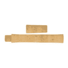

Thames River Anglers Association
header
Welcome to the TRAA
Welcome to the TRAA
Dedication Today for Tomorrow
"For the enhancement, protection and promotion of a viable, multi-species fishery within the Thames River watershed.”

TRAA gear
TRAA Gear is Available Now
Tee shirts, hats and stickers
Many of you have already ordered the TRAA tee shirts, but if you haven't you had better hurry because many sizes are almost sold out! These are a steal at $15 each
Rod Building
Rod Building - Your First Time
7:00PM - Mondays, February 18 through March 11, 2019
This will be a series of informal, hands-on sessions that will result in a spinning or fly rod that you have assembled and finished yourself.
This opportunity is open only to current members of the TRAA, WOFGPA and/or FCFFC.
Rod Building Photos
hatchery info
Hatchery
The TRAA Trout Hatchery began in the mid-1980's as an outdoor upwelling box located adjacent to Komoka Creek on private property.
Fundraising
Fundraising
Improvments to the TRAA
Improvments To the
TRAA Trout Hatchery
Continuation of the Salmonid Monitoring Program
Continuation of the
Salmonid Monitoring
Program
Komoka Creek Hydrological Study
Komoka Creek
Hydrological Study
Local Businesses
Melchers
Construction Limited

Guillevin
International Co.
Muma
Manufacturing
Try Recycling
Inc.
Angling Sports